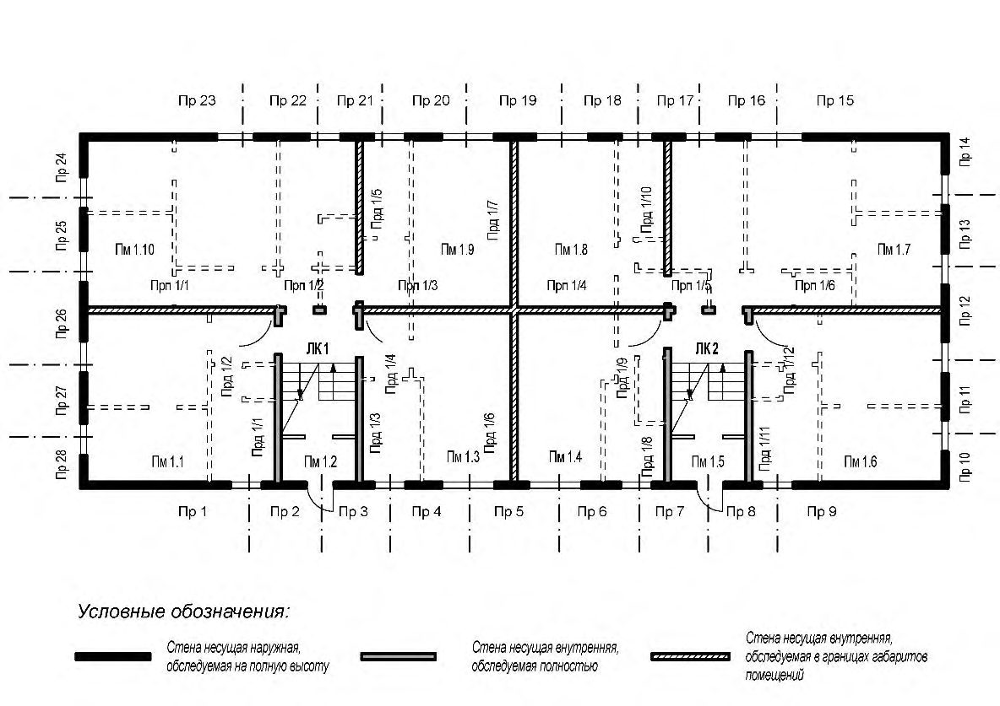
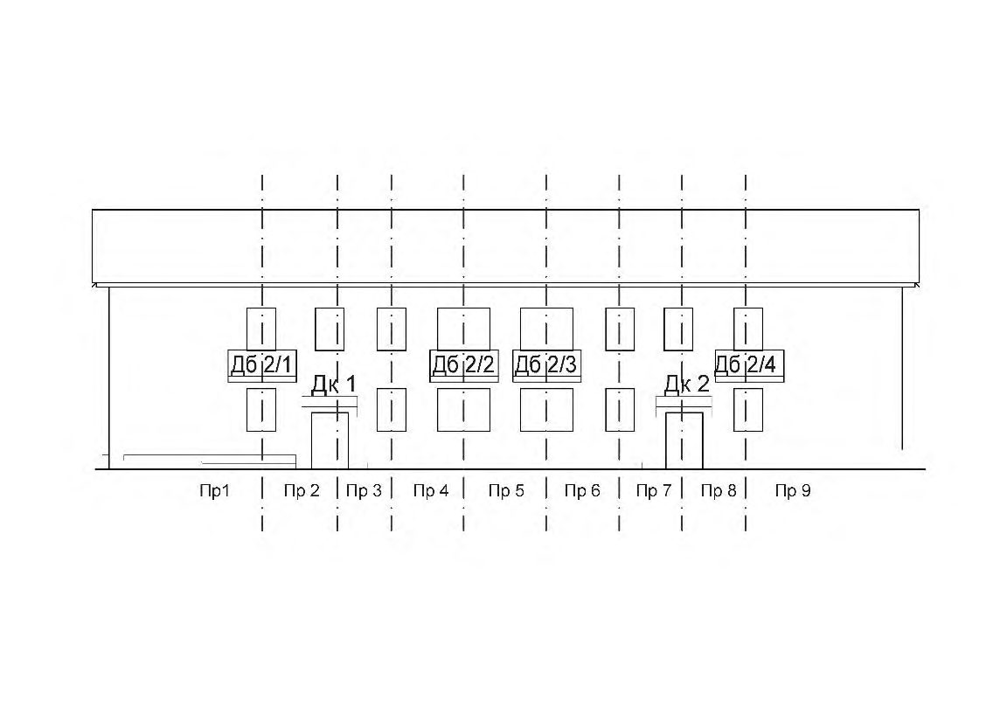
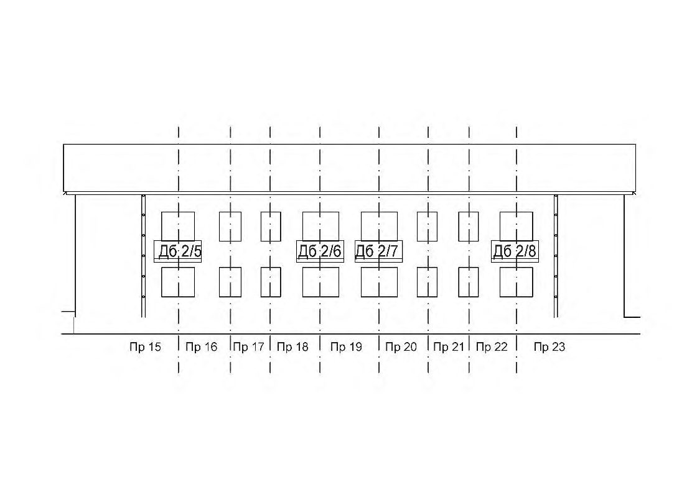

СП 454.1325800.2019 «Здания жилые многоквартирные. Правила оценки аварийного и о»
О документе: разработчики, утверждение, регистрация, ключевые слова
СВОД ПРАВИЛ
СП 454.1325800.2019
Издание официальное
1 ИСПОЛНИТЕЛИ - Акционерное общество «Центральный научноисследовательский и проектно-экспериментальный институт промышленных зданий и сооружений - ЦНИИПромзданий» (АО «ЦНИИПромзданий») и Акционерное общество «Конструкторско-технологическое бюро бетона и железобетона» (АО «КТБ ЖБ»)
2 ВНЕСЕН Техническим комитетом по стандартизации ТК 465 «Строительство»
3 ПОДГОТОВЛЕН к утверждению Департаментом градостроительной деятельности и архитектуры Министерства строительства и жилищнокоммунального хозяйства Российской Федерации (Минстрой России)
[4 УТВЕРЖДЕН приказом Министерства строительства и жилищнокоммунального хозяйства Российской Федерации от 24 декабря 2019 г. № 853/пр и введен в действие с 25 июня 2020 г.](http://docs.cntd.ru/document/902268755)
5 ЗАРЕГИСТРИРОВАН Федеральным агентством по техническому регулированию и метрологии (Росстандарт)
6 ВВЕДЕН ВПЕРВЫЕ
В случае пересмотра (замены) или отмены настоящего свода правил соответствующее уведомление будет опубликовано в установленном порядке. Соответствующая информация, уведомление и тексты размещаются также в информационной системе общего пользования - на официальном сайте разработчика (Минстрой России) в сети Интернет
© Минстрой России, 2019
Настоящий нормативный документ не может быть полностью или частично воспроизведен, тиражирован и распространен в качестве официального издания на территории Российской Федерации без разрешения Минстроя России
СП 454.1325800.2019
Дата введения - 2020-06-25
УДК: ОКС 91.200
Ключевые слова: жилые многоквартирные здания, аварийное состояние, ограниченно-работоспособное техническое состояние, механическая безопасность, процедура оценки, критерии аварийного состояния, характерные дефекты, единичная конструкция
| Руководитель организации-разработчика АО «ЦНИИПромзданий» | Руководитель организации-разработчика АО «ЦНИИПромзданий» | Руководитель организации-разработчика АО «ЦНИИПромзданий» |
|---|---|---|
| Генеральный директор, д.т.н., профессор | В.В. Гранев | |
| Руководитель организации-разработчика АО «КТБ ЖБ» | Руководитель организации-разработчика АО «КТБ ЖБ» | |
| Генеральный директор, к.т.н., доцент | А.А. Давидюк | |
| Руководители разработки | Руководители разработки | |
| Первый заместитель генерального директора - главный инженер, к.т.н. Заместитель генерального | Н.Г. Келасьев | |
| директора по научной и производственной работе | А.А. Золотарев | |
| ИСПОЛНИТЕЛИ: | ИСПОЛНИТЕЛИ: | |
| Директор НИИЖБ им. А.А. Гвоздева, д.т.н. Заместитель директора | А.Н. Давидюк | |
| по строительному инжинирингу НИИЖБ им. А.А. Гвоздева Главный специалист, АО «ЦНИИПромзданий», | А.В. Беляев | |
| к.э.н. Руководитель центра по | Е.А. Лепешкина | |
| безопасной эксплуатации зданий и сооружений, АО «ЦНИИПромзданий» Главный специалист, | А.С. Денисов | |
| АО «ЦНИИПромзданий» Ведущий инженер | А.Ю. Солодова | |
| АО «КТБ ЖБ» | Э.Е. Алпеева | |
| Ведущий инженер АО «КТБ ЖБ» | С.С. Антипов |
Введение
Настоящий свод правил разработан для массовой оценки технического состояния жилых многоквартирных зданий и структуризации жилого фонда малой и средней этажности.
Настоящий свод правил разработан в целях обеспечения требований Федерального закона от 30 декабря 2009 г. № 384-ФЗ «Технический регламент о безопасности зданий и сооружений» и с учетом требований федеральных законов от 29 декабря 2004 г. № 188-ФЗ «Жилищный кодекс Российской Федерации», от 29 декабря 2004 г. № 190-ФЗ «Градостроительный кодекс Российской Федерации», от 27 декабря 2002 г. № 184-ФЗ «О техническом регулировании», а также постановления Правительства Российской Федерации от 28 января 2006 г. № 47 «Об утверждении Положения о признании помещения жилым помещением, жилого помещения непригодным для проживания, многоквартирного дома аварийным и подлежащим сносу или реконструкции, садового дома жилым домом и жилого дома садовым домом» и в развитие ГОСТ 31937-2011 Здания и сооружения. Правила обследования и мониторинга технического состояния.
Свод правил разработан авторским коллективом: АО «ЦНИИПромзданий» (руководитель разработки - д-р техн. наук, проф. В.В. Гранев , канд. техн. наук Н.Г. Келасьев , канд. экон. наук Е.А. Лепешкина , А.С. Денисов , А.Ю. Солодова ) и АО «КТБ ЖБ» (руководитель разработки канд. техн. наук, доц. А.А. Давидюк , А.А. Золотарев , д-р техн. наук А.Н. Давидюк , А.В. Беляев , Э.Е. Алпеева , С.С. Антипов ).
и ограниченно-работоспособного технического состояния ЗДАНИЯ ЖИЛЫЕ МНОГОКВАРТИРНЫЕ Правила оценки аварийного
Multi-apartment residential buildings.
Rules for definition of emergency and limited-serviceable technical condition
1Область применения
Настоящий свод правил устанавливает правила оценки технического состояния жилых многоквартирных зданий (далее - жилые здания) с выявлением зданий, находящихся в аварийном и ограниченно-работоспособном техническом состоянии, и распространяется на жилые здания высотой до пяти этажей (включительно).
СП 454.1325800.2019
2Нормативные ссылки
В настоящем своде правил использованы нормативные ссылки на следующие документы:
ГОСТ 12.4.026-2015 Система стандартов безопасности труда. Цвета сигнальные, знаки безопасности и разметка сигнальная. Назначение и правила применения. Общие технические требования и характеристики. Методы испытаний
ГОСТ 31937-2011 Здания и сооружения. Правила обследования и мониторинга технического состояния
ГОСТ 34081-2017 Здания и сооружения. Определение параметров основного тона собственных колебаний
ГОСТ Р 56194-2014 Услуги жилищно-коммунального хозяйства и управления многоквартирными домами. Услуги проведения технических осмотров многоквартирных домов и определение на их основе плана работ, перечня работ. Общие требования
СП 329.1325800.2017 Здания и сооружения. Правила обследования после пожара
Примечание - При пользовании настоящим сводом правил целесообразно проверить действие ссылочных документов в информационной системе общего пользования - на официальном сайте федерального органа исполнительной власти в сфере стандартизации в сети Интернет или по ежегодному информационному указателю «Национальные стандарты», который опубликован по состоянию на 1 января текущего года, и по выпускам ежемесячного информационного указателя «Национальные стандарты» за текущий год. Если заменен ссылочный документ, на который дана недатированная ссылка, то рекомендуется использовать действующую версию этого документа с учетом всех внесенных в данную версию изменений. Если заменен ссылочный документ, на который дана датированная ссылка, то рекомендуется использовать версию этого документа с указанным выше годом утверждения (принятия). Если после утверждения настоящего свода правил в ссылочный документ, на который дана датированная ссылка, внесено изменение, затрагивающее положение, на которое дана ссылка, то это положение рекомендуется применять без учета данного изменения. Если ссылочный документ отменен без замены, то положение, в котором дана ссылка на него, рекомендуется применять в части, не затрагивающей эту ссылку. Сведения о действии свода правил целесообразно проверить в Федеральном информационном фонде стандартов.
3Термины и определения
В настоящем своде правил применены термины по ГОСТ 31937, а также следующие термины с соответствующими определениями:
- 3.1дефект
- Каждое отдельное несоответствие продукции установленным требованиям.Источник: ГОСТ 15467-79, пункт 38
- 3.2единичная конструкция
- Несущая строительная конструкция (часть конструкции), являющаяся повторяющимся элементом в совокупности всех несущих строительных конструкций данного типа.
- 3.3несущие конструкции (элементы)
- Конструкции, воспринимающие постоянную и временную нагрузку, в том числе нагрузку от других частей зданий. [ГОСТ 30247.1-94, пункт 3.1]
- 3.4помещение
- Пространство внутри здания, имеющее определенное функциональное назначение и ограниченное строительными конструкциями или условными границами.Источник: ГОСТ Р 58033-2017, пункт 4.1.1
- 3.5потеря целостност и
- Снижение несущей способности и/или устойчивости единичной конструкции в результате нарушения формы или физических свойств материала изготовления (разрушение, образование сквозных трещин с разделением на две части и более, био- и огнепоражение и т. д.).
- 3.6простенок ( здесь )
- Часть стены, ограниченная центральными осевыми линиями смежных оконных или дверных проемов. СП 454.1325800.2019
4Общие положения
- разрушения части здания;
- разрушения отдельных несущих строительных конструкций или их частей;
- повреждения части здания в результате деформации, перемещений либо потери устойчивости строительных несущих строительных конструкций, в том числе отклонений от вертикальности;
- деформации недопустимой величины несущих строительных конструкций.
Для осуществления проектных работ по восстановлению указанных аварийных элементов следует проводить дополнительные обследования в соответствии с ГОСТ 31937.
СП 454.1325800.2019 усилению или замене аварийных элементов без отселения жильцов и нарушения эксплуатации жилого здания в целом.
К форме заключения прикладывают схемы с фиксацией мест расположения аварийных и ограниченно-работоспособных несущих строительных конструкций с фотофиксацией их дефектов.
5Оценка технического состояния жилых зданий
5.1Методика оценки технического состояния несущих строительных конструкций и жилого здания в целом
Оценку отдельной несущей строительной конструкции на соответствие критериям аварийности начинают с наименее сложных и трудоемких работ и заканчивают наиболее сложными и трудоемкими. Рекомендуемый порядок проверки критериев аварийности приведен в таблицах 5.2-5.26.
Категорию технического состояния несущей строительной конструкции устанавливают как аварийную после выявления первого соответствия оцениваемого параметра одному из указанных критериев и дальнейшую оценку по оставшимся критериям для этой конструкции не проводят.
При выявлении признаков аварийности внутренней несущей стены или колонны в пределах этажа к аварийной категории технического состояния также относят расположенные непосредственно над ними участки стены или колонны верхних этажей.
СП 454.1325800.2019
5.2Общие правила проведения освидетельствования технического состояния жилого здания
- подготовительных работ, предусматривающих: ознакомительный выезд для осмотра жилого здания (при необходимости), ознакомление с технической документацией на объект (при наличии); составление плана осмотра и разработку формы фиксации дефектов; организационные мероприятия по взаимодействию с эксплуатирующей организацией и жильцами;
- осмотра и измерения контролируемых параметров несущих строительных конструкций в соответствии с разработанным планом.
- год постройки здания;
- место расположения здания;
- фотографии фасадов;
- фотографии дефектных участков;
- результаты предыдущих технических заключений по обследованию;
- данные бюро технической инвентаризации (БТИ) (схемы поэтажных планов, конструктивные элементы здания, сведения о переоборудовании и перепланировках);
- конструктивная схема здания;
- технико-экономические показатели здания (общая площадь здания (отдельно указывают площадь квартир и площадь нежилых помещений), количество этажей, количество квартир);
- сведения о проведенных ремонтах, усилениях, сносе элементов здания (при наличии);
- сведения об имевших место аварийных случаях (пожары, протечки для деревянных конструкций, перепланировки квартир и др.) и чрезвычайных ситуациях (наводнения, землетрясения и др.);
- сведения о ненадлежащем техническом состоянии здания, полученные от жильцов и эксплуатирующей организации.
В зависимости от результатов ознакомительного выезда:
- составляют соответствующий акт о фактической утрате функций жилого здания на основании технического освидетельствования разрушения здания и прекращения его эксплуатации в качестве жилого;
- при наличии внешних признаков аварийного состояния наружных стен для жилых зданий с несущими или самонесущими наружными стенами проводят измерения выявленных дефектов и в случае подтверждения аварийного состояния несущей строительной конструкции на основании 5.1.3 составляют техническое заключение об аварийном состоянии жилого здания без проведения дальнейших исследований;
- осуществляют сбор отсутствующих сведений для разработки плана осмотра и измерения контролируемых параметров, к которым относятся схемы поэтажных планов с указанием несущих строительных конструкций, сведения о материале несущих строительных конструкций, указания на наиболее поврежденные несущие строительные конструкции жилого здания, фотографии фасадов и выявленных дефектов и повреждений.
- осмотру и измерениям контролируемых параметров подлежит не менее 10 % (но не менее трех) несущих строительных конструкций каждого типа. Требования к объему обследуемых конструкций приведены в [1];
- для объективной оценки категории технического состояния жилого здания в целом выборка однотипных несущих строительных конструкций для проведения измерений контролируемых параметров должна включать элементы, расположенные в различных частях (помещениях) жилого здания;
- измерениям и фиксации подлежат контролируемые параметры дефектов, соответствующие перечню параметров оценки технического состояния, представленных в таблицах 5.2-5.26;
- должно быть обеспечено применение унифицированных методов и средств измерений, обеспечивающих объективность и достоверность результатов технического освидетельствования.
- единичная конструкция является наиболее типичным, повторяющимся элементом в совокупности всех конструкций данного типа;
- существует возможность осмотра единичной конструкции целиком: для наружных стен - по всей высоте, для внутренних конструкций - в пределах одного помещения или квартиры.
Единичные конструкции одного типа, но имеющие различные геометрические и конструктивные параметры, в самостоятельные подтипы не выделяются (например, балки разной длины, плиты, простенки различной площади и т. д.).
| Часть жилого здания | Материал несущей строительной конструкции | Маркировка несущей конструкции | Единичная конструкция | Единичная конструкция |
|---|---|---|---|---|
| строительной | Внешний осмотр | Внутренний осмотр | ||
| Фундамент, стены подвала | Железобетон, бетон | Ф-ЖБ | Видимая часть фундамента (фундаментной стены/ фундаментной балки (ростверка) с фундаментными столбами) в проекции | Часть фундамента (фундаментной стены/ фундаментной балки (ростверка) с фундаментными в проекции простенка стены |
| Фундамент, стены подвала | Камень | Ф-К | Видимая часть фундамента (фундаментной стены/ фундаментной балки (ростверка) с фундаментными столбами) в проекции | |
| Фундамент, стены подвала | Древесина | Ф-Д | Видимая часть фундамента (фундаментной стены/ фундаментной балки (ростверка) с фундаментными столбами) в проекции | |
| Фундамент, стены подвала | Смешанный | Ф-СМ | Видимая часть фундамента (фундаментной стены/ фундаментной балки (ростверка) с фундаментными столбами) в проекции | столбами) |
| простенка стены | в границах помещения, на высоту видимой части либо подвального/цокольного помещения | |||
|---|---|---|---|---|
| Наружные стены | Железобетон, бетон, шлакобетон (и разновидности) | С-ЖБ | Простенок на всю высоту, плита (изделие) | Простенок на всю высоту, плита (изделие) |
| Наружные стены | Камень | С-К | Простенок на всю высоту | Простенок на всю высоту |
| Наружные стены | Древесина | С-Д | Простенок на всю высоту | Простенок на всю высоту |
| Наружные стены | Смешанный (деревянный каркас с заполнением) | С-СМ | Простенок на всю высоту, несущий элемент каркаса | Простенок на всю высоту, несущий элемент каркаса на всю высоту |
| Внутренние стены | Железобетон, бетон, шлакобетон (и разновидности) | С-ЖБ | - | Простенок в границах этажа |
| Внутренние стены | Камень | С-К | - | Простенок в границах этажа |
| Внутренние стены | Древесина | С-Д | - | Простенок в границах этажа |
| Внутренние стены | Смешанный (деревянный каркас с заполнением) | С-СМ | - | Простенок в границах этажа, несущий элемент каркаса в границах высоты этажа |
| Колонна | Железобетон | К-ЖБ | Колонна | Колонна в границах высоты этажа |
| Колонна | Камень | К-К | Колонна | Колонна в границах высоты этажа |
| Колонна | Металл | К-М | Колонна | Колонна в границах высоты этажа |
| Колонна | Древесина | К-Д | Колонна | Колонна в границах высоты этажа |
| Колонна | Смешанный (камень с металлической обоймой) | К-СМ | Колонна | Колонна в границах высоты этажа |
| Перекрытия 1) | Железобетон | П-ЖБ Б-ЖБ | - | Плита (изделие) Ригель, прогон, балка |
| Перекрытия 1) | Металл | Б-М | - | Ригель, прогон, балка |
| Перекрытия 1) | Древесина | Б-Д | - | Ригель, прогон, балка |
| Перекрытия 1) | Камень (кирпичные | П-К | Свод, каменное перекрытие | Свод, каменное перекрытие, то же в |
СП 454.1325800.2019
| своды) | границах помещения | |||
|---|---|---|---|---|
| «Деревянный накат» по металлическим балкам | П-СМ | - | «Деревянный накат» по периметру, ограниченный несущими балками | |
| Покрытие | Металл | СТР-М | - | Несущее стропило |
| Покрытие | Древесина | СТР-Д | - | Совокупность конструкций в пределах стропильного шага (обрешетка, подкосы, прогоны, мауэрлат, кобылки), то же в границах помещения |
| Покрытие | Железобетон | П-ЖБ Б-ЖБ | - | Плита Балка |
| Балконы, козырьки | Балконная плита | ДП-ЖБ | Консольная балконная плита, балконная плита с опорами/консольными балками | - |
| Балконы, козырьки | Козырек входа | ДК-ЖБ | Козырек входа (консольная плита), козырек с опорами или подвесом | - |
| Лестница | Железобетон | ЛК-ЖБ | Лестничный марш, площадка | Лестничный марш, площадка |
| Лестница | Металл | ЛК-М | Лестничный марш, площадка | Лестничный марш, площадка |
| Лестница | Древесина | ЛК-Д | Лестничный марш, площадка | Лестничный марш, площадка |
| Лестница | Смешанный | ЛК-СМ | Лестничный марш, площадка | Лестничный марш, площадка |
1) В случае отсутствия возможности установить точные габариты плит перекрытий за единичную конструкцию принимают условные плиты длиной, равной шагу вертикальных несущих строительных конструкций, и расчетным значением ширины, одинаковым для всех плит.
5.2.8 Обязательному включению в план осмотра подлежат:
- несущие строительные конструкции, о дефектах которых есть информация;
- несущие строительные конструкции помещений общего пользования;
- несущие строительные конструкции в подвальных помещениях, помещениях нижних и верхних этажей.
При отсутствии данных о наличии дефектов в однотипных несущих строительных конструкциях (балках, колоннах, плитах и панелях стен) выборку осуществляют равномерно по всей площади жилого здания.
- отсутствием доступа в квартиры и иные помещения жилого здания, включенные в план;
- отсутствием доступа непосредственно к несущим строительным конструкциям для проведения запланированных измерений;
- выявлением при осмотре жилого здания несущих строительных конструкций с внешними признаками аварийного состояния и не включенных в план.
- осмотр доступных несущих и самонесущих наружных стен жилого здания и выявление наиболее поврежденных участков;
- корректировку плана осмотра и выборки несущих строительных конструкций для дальнейших измерений на основе произведенного осмотра;
- осмотр и измерение контролируемых параметров несущих строительных конструкций, расположенных в нежилых помещениях: подвалах (технических подпольях), лестничных клетках, коридорах, чердаках, технических помещениях;
- осмотр несущих строительных конструкций выборочных квартир с инструментальными измерениями контролируемых параметров;
- оценку фактических значений контролируемых параметров выявленных дефектов на соответствие критериям аварийного, ограниченно-работоспособного технического состояний по таблицам 5.2-5.26;
- указания местоположения аварийных и ограниченно-работоспособных несущих строительных конструкций на схемах фасадов и поэтажных планах;
- заключение о выявлении или невыявлении аварийной, ограниченноработоспособной категорий технического состояния жилого здания в соответствии с правилами 5.1.3-5.1.7.
Если для технической оценки несущих строительных конструкций стен и плит перекрытия требуется вскрытие обшивки, а для технической оценки деревянных балок перекрытия - вскрытие полов, то вскрытие проводят с согласия и в присутствии жильцов квартиры.
При отказе жильцов квартиры на вскрытие, как исключение, для фиксации дефектов, скрытых обшивкой, разрешается использовать фото- и видеоматериалы жильцов. При этом участок жилого здания на фото- или видеоматериале должен быть однозначно определяемым.
- титульный лист организации, выполнившей техническую оценку;
- заполненная форма заключения в соответствии с приложением А;
- заполненная форма оценки «Фиксация дефектов несущих строительных конструкций жилого многоквартирного здания» (далее -форма оценки) в соответствии с приложением Б;
СП 454.1325800.2019
- общие выводы по результатам технической оценки.
Заполненные формы оценки и заключения представляют в электронном виде заданного формата с присвоением оценке идентификационного номера технического заключения.
- последовательности осмотра наружных и внутренних несущих строительных конструкций жилого здания, не требующих доступа в помещения квартир;
- перечня выбранных для осмотра помещений (в том числе помещений квартир) с указанием несущих строительных конструкций, техническое состояние которых подлежит оценке;
- перечня несущих строительных конструкций, аварийное состояние которых в техническом заключении о техническом состоянии жилого здания выделяется в отдельный пункт (деревянные покрытия, балконы, наружные галереи, козырьки);
- последовательности измерений контролируемых параметров по каждой оцениваемой конструкции.
Для всех конструкций, включенных в план осмотра, указывают единичную конструкцию, определенную в соответствии с 5.2.7.
Порядок нумерации единичных конструкций приведен в приложении В.
Графическое приложение к форме оценки разрабатывают в объеме схем поэтажных планов, фасадов, разрезов (при необходимости) с указанием обследуемых помещений и мест расположения несущих строительных конструкций.
В качестве схемы фасадов допускается использование фотографий, в том числе в электронном виде, если программное обеспечение позволяет в полевых условиях отмечать на них места размещения поврежденных несущих строительных конструкций.
Порядок заполнения формы оценки приведен в приложении Г.
- подсчет количества несущих строительных конструкций каждого типа, для которых были проведены контрольные измерения. Подсчет проводят путем суммирования несущих строительных конструкций по всем оцениваемым помещениям и выражают в абсолютном значении (количество единичных конструкций) и процентах от общего количества несущих строительных конструкций данного типа в жилом здании. Подсчет осуществляют для подтверждения достаточности выборки в соответствии с 5.2.4, 5.2.5;
- подсчет количества несущих строительных конструкций каждого типа в аварийном, ограниченно-работоспособном техническом состоянии. Результат подсчета выражают в процентах от общего количества конструкций данного типа в жилом здании;
- оценку технического состояния жилого здания на основании проведенных расчетов в соответствии с 5.1.3-5.1.7.
Итоговые результаты аналитической обработки данных, полученных на объекте при осмотре и измерении контролируемых параметров несущих строительных конструкций, изложенные в виде сводной таблицы, включают в техническое заключение по оценке технического состояния жилого здания (см. приложение А).
5.3Критерии оценки технического состояния единичных конструкций жилых зданий
- деформации (сквозные трещины, прогибы и выгибы, просадки и т. п.) конструкций;
- изменение проектного положения конструкций (отклонения от вертикали, смещение с опор и т. п.);
- уменьшение площади сечения элементов конструкций (вследствие разрушения и износа материалов).
5.3.8 Критерии оценки категорий технического состояния несущих строительных конструкций фундаментов и стен подвалов (Ф)
Оценку технического состояния проводят для несущих строительных конструкций фундаментов и стен подвалов, изготовленных из бетона (железобетона), камня (кирпича) и древесины. Значения критериев при отнесении фундаментов и стен подвалов к ограниченно-работоспособной и аварийной категориям приведены в таблицах 5.2-5.4.
Характерные места расположения дефектов:
- места сопряжения с отмостками;
- вводы инженерных коммуникаций;
- места вхождения свай в грунт;
- зона сопряжения свай с ростверком.
Таблица 5.2 -Критерии оценки технического состояния единичных конструкций фундаментов и стен подвалов из бетона и железобетона (Ф-ЖБ)
| Значение критерия | Значение критерия | |
|---|---|---|
| Наименование критерия | Ограниченно- работоспособное | Аварийное |
| 1 Физическое отсутствие единичной конструкции, потеря целостности | - | Выявлено |
| 2 Сквозная трещина в цокольной части, стене подвала, ростверке | 3,5-5,0 мм ширины раскрытия | Более 5,0 мм ширины раскрытия |
| 3 Вертикальная осадка цоколя (искривление горизонтальной линии) | 25 %-35% толщины цоколя | Более 35% толщины цоколя |
| 4 Выпучивание из плоскости стены подвала (из-за давления грунта) | 1,4 %-2,0% общего пролета стены | Более 2,0% общего пролета стены |
| 5 Разрушение материала по толщине сечения | 10 %-15% толщины сечения | Более 15% толщины сечения |
| 6 Уменьшение из-за коррозии площади сечения арматуры ростверка при разрушении защитного бетонного слоя | До 15% площади сечения | Более 15% площади сечения |
Таблица 5.3 Критерии оценки технического состояния единичных конструкций фундаментов и стен подвалов из камня и мелких блоков (Ф-К)
| Значение критерия | Значение критерия | |
|---|---|---|
| Наименование критерия | Ограниченно- работоспособное | Аварийное |
| 1 Физическое отсутствие единичной конструкции, потеря целостности | - | Выявлено |
| 2 Сквозная трещина в цокольной части, стене подвала, ростверке | 3,5-5,0 мм ширины раскрытия | Более 5,0 мм ширины раскрытия |
| 3 Вертикальная осадка цоколя (искривление горизонтальной линии) | 25 %-35% толщины цоколя | Более 35% толщины цоколя |
| 4 Выпучивание из плоскости стены подвала (из-за давления грунта) | 1,4 %-2,0% общего пролета стены | Более 2,0% общего пролета стены |
| 5 Разрушение материала по толщине сечения | 10 %-15% толщины сечения | Более 15% толщины сечения |
Таблица 5.4 Критерии оценки технического состояния единичных конструкций фундаментов из древесины (Ф-Д)
| Значение критерия | Значение критерия | ||
|---|---|---|---|
| Наименование критерия | Наименование критерия | Ограниченно- работоспособное | Аварийное |
| 1 | Физическое отсутствие единичной конструкции, потеря целостности | - | Выявлено |
| 2 | Смещение (искривление) горизонтальной линии цоколя | 25 %-35% толщины цоколя | Более 35% толщины цоколя |
| 3 | Разрушение (поражение гнилью) материала по толщине сечения | 15 %-25% толщины сечения | Более 25% толщины сечения |
5.3.9 Критерии оценки категорий технического состояния несущих строительных конструкций стен (С)
Оценку технического состояния проводят для несущих стен, изготовленных из бетона (железобетона), шлакобетона, а также из камня (кирпича) и древесины. Значения критериев при отнесении стен к ограниченно-работоспособной и аварийной категориям приведены в таблицах 5.5-5.8.
Характерные места расположения дефектов:
- стыки панелей;
- простенки и перемычки;
- места прохождения водостоков и расположения выступающих деталей фасадов (балконы, пояски и т. п.).
Таблица 5.5 -Критерии оценки технического состояния единичных конструкций несущих стен из железобетона, бетона, шлакобетона и их разновидностей (С-ЖБ)
| Значение критерия | Значение критерия | |
|---|---|---|
| Наименование критерия | Ограниченно- работоспособное | Аварийное |
| 1 Физическое отсутствие единичной конструкции, потеря целостности | - | Выявлено |
| 2 Вертикальная, наклонная трещина | 3,5-5,0 мм ширины раскрытия | Более 5,0 мм ширины раскрытия |
| 3 Крен | 1/80-1/50 высоты стены | Более 1/50 высоты стены |
| 4 Относительное смещение панели, блока в плоскости стены | 14-20 мм | Более 20 мм |
| 5 Относительное выступание панели, блока из плоскости стены | До 15% толщины панели, блока | Более 15% толщины панели, блока |
| 6 Горизонтальное выпучивание стены | 1/150-1/100 высоты простенка | Более 1/100 высоты простенка |
| 7 Разрушение материала панели с уменьшением горизонтального сечения | До 15% толщины сечения | Более 15% толщины сечения |
Таблица 5.6 -Критерии оценки технического состояния единичных конструкций несущих стен из камня (С-К)
| Значение критерия | Значение критерия | |
|---|---|---|
| Наименование критерия Ограниченно- работоспособное | Наименование критерия Ограниченно- работоспособное | Аварийное |
| 1 Физическое отсутствие единичной конструкции, потеря целостности | - | Выявлено |
| 2 Вертикальная, наклонная трещина | 3,5-5,0 мм ширины раскрытия | Более 5,0 мм ширины раскрытия |
| 3 Сквозные трещины в узлах примыкания продольных и поперечных стен | 3,5-5,0 мм ширины раскрытия | Более 5,0 мм ширины раскрытия |
| 4 Вертикальная, наклонная трещина в растянутой зоне надоконной железобетонной перемычки | 1,0-1,5 мм ширины раскрытия | Более 1,5 мм ширины раскрытия |
| 5 Крен | 1/80-1/50 высоты стены | Более 1/50 высоты стены |
| 6 Горизонтальное выпучивание простенка | 1/80-1/50 высоты стены | Более 1/50 высоты стены |
| 7 Разрушение материалов кирпичной кладки по горизонтальному сечению стены | 10 %-15% толщины сечения | Более 15% толщины сечения |
Таблица 5.7 -Критерии оценки технического состояния единичных конструкций несущих стен в виде срубов из древесины (С-Д)
| Значение критерия | Значение критерия | |
|---|---|---|
| Наименование критерия Ограниченно- работоспособное | Наименование критерия Ограниченно- работоспособное | Аварийное |
| 1 Физическое отсутствие единичной конструкции, потеря целостности | - | Выявлено |
| 2 Крен | 30 %-50% толщины стены | Более 50% толщины стены |
| 3 Местное выпучивание простенков брусчатых стен из-за расстройства горизонтальных связей между бревнами | 30 %-50% толщины стены | Более 50% толщины стены |
| 4 Поражение гнилью сечения бревен или брусьев стен | 30 %-50% толщины стены | Более 50% толщины стены |
Таблица 5.8 -Критерии оценки технического состояния единичных конструкций несущих стен из деревянного каркаса с заполнением (С-СМ)
| Значение критерия | Значение критерия | ||
|---|---|---|---|
| Наименование критерия | Наименование критерия | Ограниченно- работоспособное | Аварийное |
| 1 | Физическое отсутствие единичной конструкции, потеря целостности | - | Выявлено |
| 2 | Крен | 1/50-1/10 высоты стены | Более 1/10 высоты стены |
| 3 | Осадка элементов сборно-щитовых и каркасных стен с образованием перекосов и щелей между элементами стены из-за расстройства соединений между элементами | Щели и перекосы между элементами стены размером 1,2-2,0 см | Щели и перекосы между элементами стены размером более 2,0 см |
| 4 | Поражение гнилью каркаса и обшивок стен сборно-щитовых и каркасных стен | 30 %-50% толщины конструкции | Более 50% толщины конструкции |
5.3.10 Критерии оценки категорий технического состояния несущих строительных конструкций колонн (К)
Оценку технического состояния проводят для несущих колонн, изготовленных из железобетона, камня (кирпича), металла, древесины и смешанных материалов. Значения критериев при отнесении колонн к ограниченноработоспособной и аварийной категориям приведены в таблицах 5.9-5.13.
Характерные места расположения дефектов:
- места опирания балок и настилов;
- вертикальные грани (ребра);
- низ колонны в местах стыка с полом;
- места пересечения с перекрытиями и полами.
Таблица 5.9 -Критерии оценки технического состояния единичных конструкций колонн из железобетона (К-ЖБ)
| Значение критерия | Значение критерия | |
|---|---|---|
| Наименование критерия | Ограниченно- работоспособное | Аварийное |
| 1 Физическое отсутствие единичной конструкции, потеря целостности | - | Выявлено |
| 2 Продольные трещины в бетоне по всей высоте | 0,7-1,0 мм ширины раскрытия | Более 1,0 мм ширины раскрытия |
| 3 Нормальные трещины в бетоне | 0,7-1,0 мм ширины раскрытия | Более 1,0 мм ширины раскрытия |
| 4 Трещины в бетоне колонны на уровне верха консоли | 0,7-1,0 мм ширины раскрытия | Более 1,0 мм ширины раскрытия |
| 5 Крен | 1/80-1/50 высоты колонны | Более 1/50 высоты колонны |
| 6 Горизонтальный выгиб колонны | 1/150-1/100 высоты колонны | Более 1/100 высоты колонны |
| 7 Уменьшение из-за коррозии площади сечения арматуры колонны при разрушении защитного бетонного слоя | До 15% площади сечения | Более 15% площади сечения |
| 8 Места отрыва поперечной арматуры от продольной на 1 м высоты колонны | Отсутствуют | Одно место отрыва и более |
Таблица 5.10 Критерии оценки технического состояния единичных конструкций колонн из камня (К-К)
| Значение критерия | Значение критерия | |
|---|---|---|
| Наименование критерия | Ограниченно- работоспособное | Аварийное |
| 1 Физическое отсутствие единичной конструкции, потеря целостности | - | Выявлено |
| 2 Трещины, разрывы | - | Выявлены |
| 3 Продольные трещины в кладке по всей высоте | 0,7-1,0 мм ширины раскрытия | Более 1,0 мм ширины раскрытия |
| 4 Нормальные трещины в кладке | 0,7-1,0 мм ширины раскрытия | Более 1,0 мм ширины раскрытия |
| 5 Наклонные, продольные и поперечные трещины в основании и на уровне верха колонны | 0,7-1,0 мм ширины раскрытия | Более 1,0 мм ширины раскрытия |
| 6 Крен | 1/80-1/50 высоты колонны | Более 1/50 высоты колонны |
| 7 Выгиб колонны | 1/300-1/200 высоты колонны | Более 1/200 высоты колонны |
Таблица 5.11 Критерии оценки технического состояния единичных конструкций колонн из металла (К-М)
| Значение критерия | Значение критерия | |
|---|---|---|
| Наименование критерия | Ограниченно- работоспособное | Аварийное |
| 1 Физическое отсутствие единичной конструкции, потеря целостности | - | Выявлено |
| 2 Трещины, разрывы | - | Выявлено |
| 3 Крен | 1/80-1/50 высоты колонны | Более 1/50 высоты колонны |
| 4 Горизонтальный выгиб колонны (потеря местной устойчивости) | 1/80-1/50 высоты колонны | Более 1/50 высоты колонны |
| 5 Уменьшение из-за коррозии площади сечения колонны | 10 %-15% площади сечения | Более 15% площади сечения |
Таблица 5.12 Критерии оценки технического состояния единичных конструкций колонн из древесины (К-Д)
| Значение критерия | Значение критерия | |
|---|---|---|
| Наименование критерия | Ограниченно- работоспособное | Аварийное |
| 1 Физическое отсутствие единичной конструкции, потеря целостности | _ | Выявлено |
| 2 Трещины сквозные продольные (расслоение) | 35 %-50% площади сечения | Более 50% площади сечения |
| 3 Крен | 35 %-50% стороны колонны | Более 50% стороны колонны |
| 4 Выгиб (потеря устойчивости) колонн или элементов каркаса стены | 35 %-50% толщины сечения | Более 50% толщины сечения |
| 5 Поражение гнилью сечения опорных участков колонн и каркаса стен | 35 %-50% площади сечения | Более 50% площади сечения |
Таблица 5.13 Критерии оценки технического состояния единичных конструкций колонн из смешанных материалов (камень с металлической обоймой) (К-СМ)
| Значение критерия | Значение критерия | |
|---|---|---|
| Наименование критерия | Ограниченно- работоспособное | Аварийное |
| 1 Физическое отсутствие единичной конструкции, потеря целостности | - | Выявлено |
| 2 Продольные трещины в кладке по всей высоте колонны | 0,7-1,0 мм ширины раскрытия | Более 1,0 мм ширины раскрытия |
| 3 Нормальные трещины в кладке в растянутой зоне | 1,0-1,5 мм ширины раскрытия | Более 1,5 мм ширины раскрытия |
| 4 | Наклонные, продольные и поперечные трещины в основании и на уровне верха колонны | 0,7-1,0 мм ширины раскрытия | Более 1,0 мм ширины раскрытия |
|---|---|---|---|
| 5 | Крен | 1/80-1/50 высоты колонны | Более 1/50 высоты колонны |
| 6 | Горизонтальный выгиб колонны | 1/80-1/50 высоты колонны | Более 1/50 высоты колонны |
| 7 | Уменьшение из-за коррозии площади сечения вертикальных стоек металлической обоймы колонны | 10 %-15% площади сечения | Более 15% площади сечения |
5.3.11 Критерии оценки категорий технического состояния балок перекрытия, ригелей (Б)
Оценку технического состояния проводят для балок перекрытия, ригелей, изготовленных из железобетона, металла и древесины. Значения критериев при отнесении балок перекрытия, ригелей к ограниченно-работоспособной и аварийной категориям приведены в таблицах 5.14-5.16.
Характерные места расположения дефектов:
- середина пролета;
- опорная часть;
- зоны увлажнения и сосредоточения нагрузок;
- швы между панелями.
Таблица 5.14 -Критерии оценки технического состояния единичных конструкций балок перекрытия и ригелей из железобетона (Б-ЖБ)
| Значение критерия | Значение критерия | |
|---|---|---|
| Наименование критерия Ограниченно- работоспособное | Наименование критерия Ограниченно- работоспособное | Аварийное |
| 1 Физическое отсутствие единичной | - | Выявлено |
| конструкции, потеря целостности 2 Нормальные, наклонные трещины в бетоне растянутой зоны по всей длине конструкции | 1,4-2,0 мм ширины раскрытия | Более 2,0 мм ширины раскрытия |
| 3 Трещины в бетоне опорной части конструкции | 1,0-1,5 мм ширины раскрытия | Более 1,5 мм ширины раскрытия |
| 4 Прогиб | 1/100-1/50 длины конструкции | Более 1/50 длины конструкции |
| 5 Отслоение защитного слоя бетона и механические повреждения в растянутой зоне, с оголением | До 30 %длины растянутой зоны | Более 30 %длины растянутой зоны |
| арматуры | арматуры | ||
|---|---|---|---|
| 6 | Отслоение защитного слоя бетона и механические повреждения полок ригеля | До 30% длины полки | До 30% длины полки |
| 7 | Уменьшение из-за коррозии площади сечения арматуры при разрушении защитного бетонного слоя | До 15% площади сечения | Более 15% площади сечения |
Таблица 5.15 Критерии оценки технического состояния балок и ригелей из металла (Б-М)
| Значение критерия | Значение критерия | |
|---|---|---|
| Наименование критерия | Ограниченно- работоспособное | Аварийное |
| 1 Физическое отсутствие единичной конструкции, потеря целостности | - | Выявлено |
| 2 Трещины, разрывы | - | Выявлено |
| 3 Прогиб в плоскости стенки конструкции | 1/120-1/80 длины конструкции | Более 1/80 длины конструкции |
| 4 Прогиб в плоскости полки конструкции | 1/140-1/100 длины конструкции | Более 1/100 длины конструкции |
| 5 Потеря местной устойчивости полок составных сварных профилей сжатого пояса | До 50% ширины полок | Более 50% ширины полок |
| 6 Потеря местной устойчивости стенки составных сварных профилей в сжатой зоне | До 25% высоты стенки | Более 25% высоты стенки |
| 7 Уменьшение из-за коррозии площади сечения конструкции | 10 %-15% площади сечения | Более 15% площади сечения |
Таблица 5.16 Критерии оценки технического состояния единичных конструкций балок и ригелей из цельной древесины (Б-Д)
| Значение критерия | Значение критерия | |
|---|---|---|
| Наименование критерия Ограниченно- работоспособное | Наименование критерия Ограниченно- работоспособное | Аварийное |
| 1 Физическое отсутствие единичной конструкции, потеря целостности | - | Выявлено |
| 2 Продольные трещины (расслоение) | 35 %-50% ширины сечения | Более 50% ширины сечения |
| 3 Прогиб | 1/120-1/80 длины конструкции | Более 1/80 длины конструкции |
| 4 Уменьшение из-за поражения гнилью площади сечения конструкции | 15 %-25% площади сечения | Более 25% площади сечения |
| 5 Уменьшение из-за поражения гнилью площади сечения опорных участков конструкции | 20 %-30% площади сечения | Более 30% площади сечения |
5.3.12 Критерии оценки категорий технического состояния плит и сводов перекрытий (П; СВ)
Оценку технического состояния проводят для плит и сводов перекрытий, изготовленных из железобетона и камня (кирпича), а также смешанной строительной системы «деревянный накат» по металлическим балкам. Значения критериев при отнесении плит и сводов перекрытий к ограниченноработоспособной и аварийной категориям приведены в таблицах 5.17-5.19.
Характерные места расположения дефектов:
- места опирания на стены и колонны;
- горизонтальные грани (края плит);
- нижняя плоскость плит;
- растянутая зона в срединной части свода.
Таблица 5.17 Критерии оценки технического состояния единичных конструкций плит и сводов перекрытий из железобетона (СВ-ЖБ)
| Значение критерия | Значение критерия | |
|---|---|---|
| Наименование критерия | Ограниченно- работоспособное | Аварийное |
| 1 Физическое отсутствие единичной конструкции, потеря целостности | - | Выявлено |
| 2 Нормальные, наклонные трещины в бетоне растянутой зоны по всей длине конструкции | 1,4-2,0 мм ширины раскрытия | Более 2,0 мм ширины раскрытия |
| 3 Трещины в бетоне опорной части конструкции | 1,0-1,5 мм ширины раскрытия | Более 1,5 мм ширины раскрытия |
| 4 Прогиб | 1/120-1/80 длины конструкции | Более 1/80 длины конструкции |
| 5 Отслоение защитного слоя бетона и механические повреждения в растянутой зоне, с оголением арматуры | До 30% длины растянутой зоны | Более 30% длины растянутой зоны |
| 6 Уменьшение из-за коррозии площади сечения арматуры при разрушении защитного бетонного слоя | До 15% площади сечения | Более 15% площади сечения |
Таблица 5.18 Критерии оценки технического состояния единичных конструкций плит и сводов перекрытий из камня (кирпичные своды) (СВ-К)
| Значение критерия | Значение критерия | |
|---|---|---|
| Наименование критерия | Ограниченно- работоспособное | Аварийное |
| 1 Физическое отсутствие единичной конструкции, потеря целостности | - | Выявлено |
| 2 Нормальные, наклонные трещины в средней части свода | 1,4-2,0 мм ширины раскрытия | Более 2,0 мм ширины раскрытия |
| 3 Выпадение камней из кладки на 1 м² | До трех камней | Более трех камней |
Таблица 5.19 Критерии оценки технического состояния единичных конструкций перекрытия «деревянный накат» по металлическим балкам (П-Д)
| Значение критерия | Значение критерия | |
|---|---|---|
| Наименование критерия | Ограниченно- работоспособное | Аварийное |
| 1 Физическое отсутствие единичной конструкции, потеря целостности | - | Выявлено |
| 2 Прогиб в плоскости стенки конструкции | 1/120-1/80 длины конструкции | Более 1/80 длины конструкции |
| 3 Разрушение деревянного наката | 30 %-40% площади сечения | Более 40% площади сечения |
5.3.13 Критерии оценки категорий технического состояния конструкций покрытия (П; Б)
Оценку технического состояния проводят для несущих строительных конструкций покрытия, включенных согласно таблице 5.1 в единичную конструкцию и изготовленных из железобетона, металла и древесины. Значения критериев при отнесении единичных конструкций покрытий к ограниченноработоспособной и аварийной категориям приведены в таблицах 5.20-5.22.
Характерные места расположения дефектов:
- места сопряжения кровли с трубами, парапетами и надстройками, с воронками внутренних водостоков, карнизы, ендовы;
- узлы деревянных стропильных конструкций;
- места опираний балок и плит;
- протяженные линейные участки балок и плит.
Таблица 5.20 -Критерии оценки технического состояния единичных конструкций покрытия из железобетона (П-ЖБ, Б-ЖБ)
| Значение критерия | Значение критерия | |
|---|---|---|
| Наименование критерия | Ограниченно- работоспособное | Аварийное |
| 1 Физическое отсутствие единичной конструкции, потеря целостности | - | Выявлено |
| 2 Нормальные, наклонные трещины в бетоне растянутой зоны по всей длине балки, плиты | 1,4-2,0 мм ширины раскрытия | Более 2,0 мм ширины раскрытия |
| 3 Трещины в бетоне опорной части балки, плиты | 1,0-1,5 мм ширины раскрытия | Более 1,5 мм ширины раскрытия |
| 4 Прогиб балки | 1/100-1/50 длины конструкции | Более 1/50 длины конструкции |
| 5 Прогиб плиты | 1/120-1/80 длины конструкции | Более 1/80 длины конструкции |
| 6 Отслоение защитного слоя бетона и механические повреждения в растянутой зоне балки, плиты с оголением арматуры | До 30 %длины растянутой зоны | Более 30 %длины растянутой зоны |
| 7 Уменьшение из-за коррозии площади сечения арматуры при разрушении защитного бетонного слоя | До 15% площади сечения | Более 15% площади сечения |
Таблица 5.21 Критерии оценки технического состояния единичных конструкций покрытия из металла (СТР-М)
| Значение критерия | Значение критерия | |
|---|---|---|
| Наименование критерия | Ограниченно- работоспособное | Аварийное |
| 1 Физическое отсутствие единичной конструкции, потеря целостности | - | Выявлено |
| 2 Трещины, разрывы | - | Выявлено |
| 3 Выгиб из плоскости стенки конструкции | 1/120-1/80 длины конструкции | Более 1/80 длины конструкции |
| 4 Прогиб в плоскости полки конструкции | 1/140-1/100 длины конструкции | Более 1/100 длины конструкции |
| 5 Потеря местной устойчивости полок составных сварных профилей сжатого пояса | До 50% ширины полок | Более 50% ширины полок |
| 6 Потеря местной устойчивости стенки составных сварных профилей в сжатой зоне | До 25% высоты стенки | Более 25% высоты стенки |
| 7 Потеря пространственной устойчивости стропильной системы (смещения из | 1/70-1/50 высоты | Более 1/50 высоты |
СП 454.1325800.2019
| вертикальной плоскости ) | стропильной системы | стропильной системы |
|---|---|---|
| 8 Уменьшение из-за коррозии площади сечения конструкции | 10 %-15% площади сечения | Более 15% площади сечения |
Таблица 5.22 - Критерии оценки технического состояния единичных конструкций покрытия из древесины (СТР-Д)
| Значение критерия | Значение критерия | |
|---|---|---|
| Наименование критерия | Ограниченно- работоспособное | Аварийное |
| 1 Физическое отсутствие единичной конструкции, потеря целостности | - | Выявлено |
| 2 Продольные трещины | 35 %-50% ширины сечения | Более 50% ширины сечения |
| 3 Прогиб | 1/120-1/80 длины конструкции | Более 1/80 длины конструкции |
| 4 Поражение гнилью с уменьшением площади сечения конструкции | 15 %-25% площади сечения | Более 25% площади сечения |
| 5 Уменьшение из-за поражения гнилью площади сечения опорных участков конструкции | 20 %-30% площади сечения | Более 30% площади сечения |
| 6 Потеря пространственной устойчивости стропильной системы (смещения из вертикальной плоскости ) | 1/45-1/30 высоты стропильной системы | Более 1/30 высоты стропильной системы |
5.3.14 Критерии оценки категорий технического состояния балконных плит, козырьков входа (ДБ, ДП)
Оценку технического состояния проводят для балконных консольных плит, козырьков входа, изготовленных из железобетона. Значения критериев при отнесении балконных плит, козырьков входа к ограниченно-работоспособной и аварийной категориям приведены в таблице 5.23.
Характерные места расположения дефектов:
- места стыка плиты со стеной;
- участки в местах скопления влаги (углы козырька, примыкающие к стене);
- верхняя и нижние плоскости козырька;
- места сопряжения с опорами.
Таблица 5.23 Критерии оценки технического состояния единичных конструкций балконных плит и козырьков входа из железобетона (ДБ-ЖБ, ДП-ЖБ)
| Значение критерия | Значение критерия | |
|---|---|---|
| Наименование критерия | Ограниченно- работоспособное | Аварийное |
| 1 Физическое отсутствие единичной конструкции, потеря целостности | - | Выявлено |
| 2 Вертикальные трещины в местах заделки плиты | 2,0-3,0 мм ширины раскрытия | Более 1,5 мм ширины раскрытия |
| 3 Разрушение бетона сжатой зоны | 10 %-15% площади сечения | Более 15% площади сечения |
| 4 Разрушения защитного слоя бетона с оголением армирования растянутой зоны плиты в местах заделки плиты в стену | До 30% длины заделки | Более 30% длины заделки |
| 5 Уменьшение из-за коррозии площади сечения армирования растянутой зоны | До 15% площади сечения | Более 15% площади сечения |
| 6 Уклон плиты | 10 о -15 о | Более 15 о |
5.3.15 Критерии оценки категорий технического состояния лестничных конструкций
Оценку технического состояния проводят для лестничных несущих строительных конструкций, изготовленных из железобетона, металла и древесины. Значения критериев при отнесении лестничных конструкций к ограниченноработоспособной и аварийной категориям приведены в таблицах 5.24-5.26.
Характерные места расположения дефектов:
- места сопряжения косоуров со стеной и площадкой;
- нижняя плоскость монолитных маршей, косоуров;
- горизонтальные грани (края) ступеней и площадок.
Таблица 5.24 -Критерии оценки технического состояния единичных конструкций лестниц из железобетона (ЛК-ЖБ)
| Значение критерия | Значение критерия | |
|---|---|---|
| Наименование критерия Ограниченно- работоспособное | Наименование критерия Ограниченно- работоспособное | Аварийное |
| 1 Физическое отсутствие единичной конструкции, потеря целостности | - | Выявлено |
| 2 Трещины в бетоне растянутой зоны косоуров марша, площадки | 1,0-1,5 мм ширины раскрытия | Более 2,0 мм ширины раскрытия |
| 3 | Трещины в бетоне опорной части площадки, косоуров марша | 1,0-1,5 мм ширины раскрытия | Более 1,5 мм ширины раскрытия |
|---|---|---|---|
| 4 | Прогиб косоуров марша, площадки | 1/220-1/150 длины конструкции | Более 1/150 длины конструкции |
| 5 | Отслоение защитного слоя бетона и механические повреждения в растянутой зоне косоуров марша, площадки, с оголением арматуры | До 30% длины растянутой зоны | Более 30% длины растянутой зоны |
| 6 | Уменьшение из-за коррозии площади сечения арматуры при разрушении защитного бетонного слоя косоуров марша, площадки | До 15% площади сечения | Более 15% площади сечения |
Таблица 5.25 Критерии оценки технического состояния единичных конструкций лестниц из металла (ЛК-М)
| Значение критерия | Значение критерия | |
|---|---|---|
| Наименование критерия Ограниченно- работоспособное | Наименование критерия Ограниченно- работоспособное | Аварийное |
| 1 Физическое отсутствие единичной конструкции, потеря целостности | - | Выявлено |
| 2 Трещины, разрывы | - | Выявлено |
| 3 Прогиб косоура в плоскости стенки | 1/120-1/80 длины конструкции | Более 1/80 длины конструкции |
| 4 Прогиб косоура в плоскости полки | 1/100-1/50 длины конструкции | Более 1/50 длины конструкции |
| 5 Уменьшение из-за коррозии площади сечения косоура | 14 %-20% площади сечения | Более 20% площади сечения |
| 6 Уменьшение из-за коррозии площади сечения опорных участков косоура, заделанных в стену | 15 %-25% площади сечения | Более 25% площади сечения |
Таблица 5.206 -Критерии оценки технического состояния единичных конструкций лестниц из древесины (ЛК-Д)
| Значение критерия | Значение критерия | |
|---|---|---|
| Наименование критерия Ограниченно- работоспособное | Наименование критерия Ограниченно- работоспособное | Аварийное |
| 1 Физическое отсутствие единичной конструкции, потеря целостности | - | Выявлено |
| 2 Продольные трещины | 35 %-50% ширины сечения | Более 50% ширины сечения |
| 3 Прогиб | 1/120-1/80 длины конструкции | Более 1/80 длины конструкции |
| 4 Поражение гнилью с уменьшением площади сечения косоура | 15 %-25% площади сечения | Более 25% площади сечения |
| 5 Поражение гнилью с уменьшением | 20 %-30% | Более 30% |
| площади сечения опорных участков | площади сечения | площади сечения |
5.4Оценка влияния перепланировок на категорию технического состояния жилого здания
- планировка и конструктивные элементы жилого здания;
- сведения о ранее проведенных перепланировках (проекты перепланировок и (или) соответствующая техническая документация БТИ - при наличии).
- замена перегородок из легких материалов на перегородки из тяжелых материалов, размещение тяжелого оборудования в помещениях квартир;
- устройство проемов, вырубка ниш, пробивка отверстий в стенах-пилонах, стенах-диафрагмах и колоннах, а также в местах расположения связей между сборными элементами;
- устройство лоджий, балконов, террас, веранд на вторых этажах и выше;
- переустройство и (или) перепланировка чердака, технического этажа, относящихся к общему имуществу собственников помещений в жилом здании;
- создание, изменение формы и ликвидация оконных и дверных проемов в несущих стенах;
- создание навесов, остекленных навесов (в пределах существующих границ террасы) на эксплуатируемых кровлях жилых зданий, предусматривающее увеличение высоты здания;
- устройство более одной антресоли на площади помещения, в котором она сооружается;
- устройство на антресолях ванных комнат, душевых, санузлов, кухонь;
- установка газовых и (или) электрических плит на площади антресоли.
5.5Процедура и регламент признания жилого здания аварийным, ограниченно-работоспособным
1) заявления собственника жилого помещения;
2) заявления федерального органа исполнительной власти, осуществляющего полномочия собственника в отношении оцениваемого жилого здания;
3) предписания органов государственного жилищного надзора.
6Требования к мониторингу несущих строительных конструкций ограниченно-работоспособной категории технического состояния
- перечня подлежащих контролю несущих строительных конструкций и их элементов с учетом выявленных дефектов;
- мест и методов инструментальных измерений для определения динамики развития дефектов;
- общей продолжительности мониторинга.
- фиксируют степень изменения ранее выявленных дефектов и повреждений несущих строительных конструкций жилого здания (при их наличии) и выявляют вновь появившиеся дефекты и повреждения;
- проводят измерения деформаций, кренов, прогибов и т. п. и сравнивают их со значениями аналогичных величин, полученными на предыдущем этапе (при наличии);
- анализируют полученную на данном этапе мониторинга информацию и делают заключение о текущем техническом состоянии жилого здания.
- при контроле деформаций, кренов, прогибов - осмотр и измерение параметров, в том числе с использованием геодезической съемки, с периодичностью, указанной в программе;
- при контроле раскрытия трещин - установление маяков, периодические осмотры по графику;
- при контроле дефектов деревянных конструкций - осмотр, в том числе внеплановый, связанный с периодами неблагоприятного воздействия атмосферных явлений;
- для пятиэтажных жилых зданий, при необходимости, оценивают параметры основного тона собственных колебаний жилого здания в соответствии с ГОСТ 34081.
Целями повторного осмотра с измерением контролируемых параметров являются фиксация ухудшения технического состояния жилого здания и повторная его оценка на соответствие критериям аварийности.
Если по результатам повторной технической оценки категория технического состояния жилого здания не изменилась, следующую техническую оценку назначают в соответствии с 6.6.
7Требования к формам выводов технических заключений с результатами осмотра и измерений контролируемых параметров
8Требования к технике безопасности специалистов и жильцов при проведении осмотра и измерений контролируемых параметров
- от поражения электрическим током;
- последствий механической неустойчивости движущихся частей (механического травмирования);
- загрязненности воздушной среды;
- шума и вибраций.
АПриложение А. Форма заключения по оценке технического состояния жилого многоквартирного здания
Выполнил \_\_\_\_\_\_\_\_\_\_\_\_\_\_\_подпись\_\_\_\_\_\_\_\_\_\_\_\_ дата \_\_\_\_\_\_\_\_\_г. 42
Техническое заключение по оценке технического состояния жилого многоквартирного здания №\_\_\_\_\_\_\_\_\_
- 1 Адрес дома:
- 2 Год постройки:
- 3 Кадастровый номер объекта:
- 4 Кадастровый номер участка:
- 5 Исполнитель (наименование/ИНН/адрес/телефон/E-mail/Ф.И.О. эксперта):
- 6 Заказчик (наименование/ИНН/адрес/телефон/E-mail/представитель (Ф.И.О.):
- 7 Эксплуатирующая организация (наименование/ИНН/адрес/телефон/E-mail/представитель (Ф.И.О.)):
- 8 Инициатор (тип/ИНН/представитель (Ф.И.О.)/телефон/E-mail):
- 9 Технические характеристики
- 9.1 Общее количество этажей:
Наибольшее:
Наименьшее:
- 9.2 Общее количество квартир (помещений)
- 9.3 Общая площадь:
В том числе:
Площадь жилых помещений:
Площадь нежилых помещений:
- 10 Сведения о техническом состоянии несущих строительных конструкций
| Часть здания | Материал несущей строительной конструкции | Общее количество единичных конструкций одного типа, шт. | Количество обследованных конструкций, шт. | Аварийные,% общего числа конструкций/шт. | Ограниченно- работоспособные,% общего числа конструкций/шт. | Дефектов не выявлено, %общего количество конструкций | Мониторинг, %/шт. |
|---|---|---|---|---|---|---|---|
| Фундамент, стены подвала | Железобетон, бетон, камень, древесина, смешанный | ||||||
| Стена | Железобетон, бетон, шлакобетон (и разновидности), камень, древесина, смешанный (деревянный каркас с заполнением) | ||||||
| Колонна | Железобетон, камень, металл, древесина, смешанный (камень с металлической обоймой) |
Выполнил \_\_\_\_\_\_\_\_\_\_\_\_\_\_\_подпись\_\_\_\_\_\_\_\_\_\_\_\_ дата \_\_\_\_\_\_\_\_\_г.
| Балка, ригель | Железобетон, металл, древесина, смешанный |
|---|---|
| Перекрытие | Железобетон, камень (кирпичные своды), древесина, смешанный |
| Покрытие | Металл, древесина, смешанный |
| Балконы, козырьки | Балконная плита, козырек входа |
| Лестница | Железобетон, металл, древесина, смешанный |
Выполнил \_\_\_\_\_\_\_\_\_\_\_\_\_\_\_подпись\_\_\_\_\_\_\_\_\_\_\_\_ дата \_\_\_\_\_\_\_\_\_г.
- 11 Графические материалы.

Выполнил \_\_\_\_\_\_\_\_\_\_\_\_\_\_\_подпись\_\_\_\_\_\_\_\_\_\_\_\_ дата \_\_\_\_\_\_\_\_\_г.
Выполнил \_\_\_\_\_\_\_\_\_\_\_\_\_\_\_подпись\_\_\_\_\_\_\_\_\_\_\_\_ дата \_\_\_\_\_\_\_\_\_г.

Выполнил \_\_\_\_\_\_\_\_\_\_\_\_\_\_\_подпись\_\_\_\_\_\_\_\_\_\_\_\_ дата \_\_\_\_\_\_\_\_\_г.

Рекомендации по результатам оценки \_\_\_\_\_\_\_\_\_\_\_\_\_\_\_\_\_\_\_\_\_\_\_\_\_\_\_\_\_\_\_\_\_\_\_\_\_\_\_\_\_\_\_\_\_\_\_\_\_\_\_\_\_\_\_\_\_\_\_\_\_\_\_\_\_\_\_\_\_\_\_\_\_\_\_\_\_\_\_
Заключение (выбрать один из трех стандартных вариантов):
- установлена ограниченно-работоспособная категория технического состояния жилого многоквартирного здания;
- установлена аварийная категория технического состояния жилого многоквартирного здания;
- не установлены аварийная и ограниченно-работоспособная категории технического состояния жилого многоквартирного здания.
Выполнил \_\_\_\_\_\_\_\_\_\_\_\_\_\_\_подпись\_\_\_\_\_\_\_\_\_\_\_\_ дата \_\_\_\_\_\_\_\_\_г.
БПриложение Б. Форма оценки «Фиксация дефектов несущих строительных конструкций жилого многоквартирного здания»
Фиксация дефектов несущих строительных конструкций жилого многоквартирного здания
| Уровень размещения несущей строительной конструкции | Конструктивный элемент несущей строительной конструкции | Единичная конструкция | Материал единичной конструкции | Вложенные таблицы | Вложенные таблицы | Вложенные таблицы | Вложенные таблицы | Вложенные таблицы | Итоговое техническое состояние несущей строительной конструкции |
|---|---|---|---|---|---|---|---|---|---|
| 1 | 2 | 3 | 4 | 5 | 5 | 5 | 5 | 5 | 6 |
| Уровень 0 | Фундамент 1 | Пр 0.1 | Бут | Ф-Км (вложенная таблица) | Ф-Км (вложенная таблица) | Ф-Км (вложенная таблица) | Ф-Км (вложенная таблица) | Ф-Км (вложенная таблица) | |
| Уровень 0 | Фундамент 1 | Пр 0.1 | Бут | 1 | 2 | 3 | 5 | 6 | |
| Уровень 0 | Фундамент 1 | Пр 0.1 | Бут | Ф-К 1 | |||||
| Уровень 0 | Фундамент 1 | Пр 0.1 | Бут | Ф-К 2 | |||||
| Уровень 0 | Фундамент 1 | Пр 0.1 | Бут | Ф-К 3 | |||||
| Уровень 0 | Фундамент 1 | Пр 0.1 | Бут | Ф-К 4 | |||||
| Уровень 0 | Фундамент 1 | Пр 0.1 | Бут | Ф-К 5 | |||||
| Уровень 0 | Фундамент 1 | Пр 0.1 | Бут | Ф-К 6 | |||||
| Уровень 0 | Фундамент 1 | Пр 0.2 | Бут | Ф-Км | Ф-Км | Ф-Км | Ф-Км | Ф-Км | |
| Уровень 0 | Фундамент 1 | Пр 0.3 | Бут | Ф-Км | Ф-Км | Ф-Км | Ф-Км | Ф-Км | |
| Уровень 2 | Стены наружные | Пр 1 | Кирпич | С-К | С-К | С-К | С-К | С-К | |
| Уровень 2 | Стены наружные | Пр 2 | Кирпич | С-К | С-К | С-К | С-К | С-К | |
| Уровень 2 | Стены наружные | Пр 3 | Кирпич | С-К | С-К | С-К | С-К | С-К | |
| Уровень 2 | Стены внутренние несущие поперечные | Прп 1.1 | Кирпич | С-К | С-К | С-К | С-К | С-К | |
| Уровень 2 | Стены внутренние несущие поперечные | Прп 1.2 | Кирпич | С-К | С-К | С-К | С-К | С-К | |
| Уровень 2 | Стены внутренние несущие поперечные | Прп 2.1 | Кирпич | С-К | С-К | С-К | С-К | С-К |
Выполнил \_\_\_\_\_\_\_\_\_\_\_\_\_\_\_подпись\_\_\_\_\_\_\_\_\_\_\_\_ дата \_\_\_\_\_\_\_\_\_г.
| Стены внутренние несущие продольные | Прд 1.1 | Кирпич | С-К | |
|---|---|---|---|---|
| Стены внутренние несущие продольные | Прд 1.2 | Кирпич | С-К | |
| Стены внутренние несущие продольные | Прд 2.1 | Кирпич | С-К | |
| Стены внутренние несущие продольные | Прд 2.2 | Кирпич | С-К | |
| Колонны наружные | К 1 | Древесина | К-Д | |
| Колонны наружные | К 2 | Древесина | К-Д | |
| Колонны наружные | К 3 | Древесина | К-Д | |
| Колонны внутренние | К 1/1 | ЖБ | К-ЖБ | |
| Колонны внутренние | К 1/2 | ЖБ | К-ЖБ | |
| Колонны внутренние | К 2/1 | ЖБ | К-ЖБ | |
| Перекрытия | П Ц.1 | ЖБ | П-ЖБ | |
| Перекрытия | П Ц.2 | ЖБ | П-ЖБ | |
| Перекрытия | П 1.1 | ЖБ | П-ЖБ | |
| Перекрытия | П 1.2 | ЖБ | П-ЖБ | |
| Балка 2 | Б 1.1 | Древесина | Б-Д | |
| Балка 2 | Б 1.2 | Древесина | Б-Д | |
| Балконы, козырьки входа | Дб 1 | ЖБ | БП-ЖБ | |
| Балконы, козырьки входа | Дб 2 | ЖБ | БП-ЖБ | |
| Балконы, козырьки входа | Дк 1 | Металл | КП-М | |
| Лестничные клетки | ЛК 1/М1 | ЖБ | ЛК-ЖБ | |
| Лестничные клетки | ЛК 1/М2 | ЖБ | ЛК-ЖБ | |
| Лестничные клетки | ЛК 1/П1 | ЖБ | ЛК-ЖБ | |
| Лестничные клетки | ЛК 2/П1 | ЖБ | ЛК-ЖБ | |
| Уровень 3 | Стропильные фермы | Кр М1/1 | Древесина | Стр-Д |
| Уровень 3 | Стропильные фермы | Кр М2/2 | Древесина | Стр-Д |
Выполнил \_\_\_\_\_\_\_\_\_\_\_\_\_\_\_подпись\_\_\_\_\_\_\_\_\_\_\_\_ дата \_\_\_\_\_\_\_\_\_г.
ВПриложение В. Порядок нумерации и присвоения условных обозначений единичным конструкциям
В.1 Порядок нумерации и присвоения условных обозначений единичным конструкциям для объектов, проектная документация по которым отсутствует (утрачена), основан на возможности единовременного осмотра всей несущей строительной конструкции (для внешних несущих строительных конструкций и внутренних несущих строительных конструкций, доступ к осмотру которых возможен без препятствий) либо их частей, ограниченных габаритами помещения (длиной, шириной, высотой до потолка).
В.2 Нумерацию единичных конструкций на схемах планов жилого многоквартирного здания следует начинать от левого нижнего угла здания, слева направо и снизу вверх.
В.3 Нумерацию единичных конструкций на схемах фасадов жилого многоквартирного здания следует начинать от левого угла здания против хода часовой стрелки.
В.4 При обозначении единичной конструкции указывают:
- буквенное обозначение единичной конструкции;
- номер этажа (за исключением наружных стен и колонн);
- через косую черту - порядковый номер единичной конструкции.
Нумерацию внутренних единичных конструкций следует начинать с нижних этажей. При переходе с этажа на этаж единичные конструкции, расположенные друг над другом, должны иметь одинаковый порядковый номер.
В.5Порядок нумерации этажей в жилом многоквартирном здании
Для этажей 1-го уровня (наземных, от 1-го и выше) применяют простую последовательную нумерацию, начиная с 1-го этажа и далее вверх.
Для чердачных, мансардных, цокольных подвальных этажей вместо номера указывают первую букву - Ч, М, Ц, П соответственно. Если подобных этажей несколько, после буквы указывают номер этажа (для этажей ниже
СП 454.1325800.2019 первого нумерацию проводят от верхнего этажа к нижнему, для верхних этажей (чердачных, мансардных) - от нижних к верхним)
В.6Условные обозначения помещений (Пм)
- В.6.1 Для каждого помещения указывают:
- номер этажа - в соответствии с этажом расположения помещения;
- номер помещения - последовательная нумерация помещений этажа, начиная с 1.
В.6.2 Примеры условных обозначений помещений:
Помещение № 5, размещенное на третьем этаже:
Пм 3.5
Пм П.1
Помещение № 5, размещенное на втором подземном этаже:
Пм П2.5
Пм Ч.2
В.7Условные обозначения единичных конструкций несущих стен (Пр)
- В.7.1 В процессе подготовки к технической оценке выявляют несущие стены, простенки которых нумеруют последовательно в порядке, приведенном ниже:
- простенки наружных стен, которые возможно единовременно осмотреть на полную высоту;
- простенки стен лестничных клеток на высоту этажа;
- простенки внутренних несущих стен, осмотр которых возможен в границах габаритов помещений.
- В.7.2 Для фундаментных стен простенки нумеруют, начиная с 1, последовательно против хода часовой стрелки от крайнего левого угла по периметру фасадов с указанием уровня (0).
Единое пространство подвала:
Чердачное помещение № 2:
В.7.3 Для наружных стен простенки нумеруют, начиная с 1, последовательно против хода часовой стрелки от крайнего левого угла по периметру фасадов.
В.7.4 Для внутренних стен используют условные обозначения:
Пр д -единичные конструкции, являющиеся частью продольных несущих стен;
Пр п -единичные конструкции, являющиеся частью поперечных несущих стен.
Нумерацию внутренних простенков ведут для каждого материала отдельно.
- В.7.5 Примеры условных обозначений единичных конструкций несущих стен
Простенок фундаментной стены:
Пр 0/2
Пр 2
Простенок № 7 продольной стены, на третьем этаже:
Прд 3/7
Простенок № 2 продольной стены подвала:
Прп П/2
В.8Условные обозначения единичных конструкций колонн (К)
- В.8.1 Для внешних колонн применяют простую последовательную нумерацию, начиная с крайнего левого угла здания против хода часовой стрелки.
- В.8.2 Для внутренних колонн применяют простую последовательную нумерацию, начиная с 1-го этажа.
- В.8.3 Примеры условных обозначений единичных конструкций колонн
Внутренняя единичная конструкция колонны № 4 на третьем этаже:
К 3/4
К 2/4
Простенок наружной стены:
То же, на втором этаже:
То же, в цокольном этаже:
К Ц/4
В.9Условные обозначения единичных конструкций перекрытий (П)
В.9.1 Всем перекрытиям, кроме перекрытий из определяемых крупносборных несущих строительных конструкций, присваивают условные обозначения с учетом номера помещения, в котором они находятся (по потолку). Перекрытия из крупносборных элементов, размер которых меньше площади помещения, в котором они расположены, нумеруют последовательно для каждого этажа.
В.9.2 Примеры условных обозначений единичных конструкций перекрытий
Перекрытие между цокольным и первым этажами, определяемое из помещения № 3 в цокольном этаже:
Перекрытие между первым и вторым этажами, определяемое из помещения № 4:
Перекрытие из определяемых крупносборных элементов между цокольным и первым этажами:
В.10Условные обозначения единичных конструкций балок (Б)
В.10.1 Порядок условного обозначения единичных конструкций балок такой же, как для единичных конструкций перекрытий.
- В.10.2 Примеры условных обозначений единичных конструкций балок
Типовая балка № 3 на втором этаже:
Часть балки в помещении № 1 на четвертом этаже:
Б 4.1/1.
В.11Условные обозначения единичных конструкций покрытия (Пк)
В.11.1 Для каждой единичной конструкции покрытия применяют последовательную сквозную нумерацию. При размещении в подкровельном пространстве двух и более этажей (мансардного, чердачного) первым указывают номер этажа. В случае если подкровельное пространство разделено на помещения, к номеру этажа добавляют номер помещения; сквозная нумерация при этом сохраняется.
В.11.2 Примеры условных обозначений единичных конструкций покрытий
Единичная конструкция № 3 на мансардном этаже в помещении № 8 (в здании также имеется чердачный этаж):
То же, в чердачном этаже без перегородок:
В.12Условные обозначения единичных конструкций балконных плит, козырьков входа (Дк, Дп)
В.12.1 В условных обозначениях единичных конструкций балконных плит, козырьков входа применяют простую последовательную нумерацию конструкций балконов и козырьков, начиная с главного фасада, и используют следующие аббревиатуры:
Дк - козырьки над входом, крыльца;
Дп - балконные плиты.
В.12.2 Пример условного обозначения единичной конструкции балконных плит, козырьков входа
Балкон № 15, размещенный на третьем этаже бокового фасада:
В.13Условные обозначения единичных конструкций лестниц (Лк)
- В.13.1 Нумерацию лестниц начинают с основных лестничных клеток и заканчивают наружными (второстепенными или эвакуационными) лестницами:
- первая цифра - номер лестничной клетки, начиная с крайнего левого подъезда;
- вторая цифра (через косую черту после первой) - номер единичной лестничной конструкции, начиная с нижнего пролета первого этажа.
В.13.2 Для площадок применяют условное обозначение Пл, для лестничных маршей - М. Для каждой лестничной клетки начинают новую нумерацию единичных конструкций.
В.13.3 Примеры условных обозначений единичных конструкций лестниц
Лестничный марш от первого этажа к площадке на второй лестничной клетке:
ЛК 2/М1
Лестничная площадка между первым и вторым этажами на второй лестничной клетке:
ЛК 2/П1
ГПриложение Г. Порядок заполнения форм заключения и оценки
Г.1 Порядок заполнения формы заключения приведен в приложении А.
Г.2 Пункты 1-8 формы заключения заполняют на основании сведений, собранных в порядке предварительной подготовки.
Г.3 Пункт 10 формы заключения представляет собой краткую форму оценки с выводами по основным типам единичных конструкций здания. В графе «Материал несущей конструкции» указывают один или несколько материалов обследованных несущих конструкций.
Г.4Пункт 11 формы заключения (графические материалы)
Г.4.1 В качестве графических материалов допускается использовать документацию БТИ, проектную документацию на здание. При отсутствии указанной документации графические материалы, иллюстрирующие конструктивную систему здания, разрабатывают дополнительно.
Г.4.2 Поэтажные схемы жилого многоквартирного здания приводят в составе не менее одной схемы для каждого индивидуального и типового этажа.
Г.4.3 Характерный разрез жилого многоквартирного здания прикладывают при необходимости (например, когда здание имеет переменное количество этажей или перепады по уровню пола этажа). На разрезе указывают уровни жилого многоквартирного здания:
- уровень 0 - фундаментная/цокольная часть жилого многоквартирного здания до отметки основания несущих стен, несущие строительные конструкции, размещенные в подвале;
- уровень 1 - от отметки основания несущих стен до уровня низа несущих строительных конструкций покрытия;
- уровень 2 -от уровня низа несущих строительных конструкций покрытия до уровня верхней отметки несущих строительных конструкций покрытия.
СП 454.1325800.2019
Г.4.4 Фасады жилого многоквартирного здания приводят в составе не менее одного чертежа/изображения для каждого характерного фасада. В качестве схемы фасадов допускается использование общей фотографии фасада с минимальными перспективными искажениями.
Г.4.5 Нумерацию единичных конструкций в графической части проводят в соответствии с приложением В.
Г.5Порядок заполнения формы оценки (приложение Б)
Г.5.1 Форму оценки приводят в виде общей таблицы, в которую дополнительно включают вложенные таблицы для каждой единичной конструкции. Вложенные таблицы допускается приводить отдельно от общей таблицы.
Г.5.2 Общая таблица структурируется по принципу от общего к частному.
Головка таблицы:
- в графе 1 указывают уровень размещения несущей строительной конструкции;
- в графе 2 указывают конструктивный элемент несущей строительной конструкции (при наличии) - видимая часть фундамента, колонна фундамента, стена подвала; наружная, внутренняя стена; покрытие, лестничная клетка, плита балкона, козырьки входа, перекрытия и т. д.;
- в графе 3 указывают единичную конструкцию (простенок фундамента, простенок стены подвала, простенок стены, колонна 1, колонна 2 и т. д.). Заполняют данную графу в соответствии со схемами планов;
- в графе 4 указывают материал единичной конструкции;
- в графе 5 размещают вложенную таблицу или ссылку на нее;
- в графе 6 приводят заключение о техническом состоянии единичной конструкции.
На каждой странице формы оценки проставляют идентификационный номер технического заключения и подпись лица, проводившего техническую оценку.
Г.6Вложенные таблицы для каждой осматриваемой единичной конструкции повторяют структуру таблиц 5.2-5.26
Г.6.1 Для каждой вложенной таблицы соблюдают следующую структуру:
- строки: а) головка таблицы; б) критерии оценки технического состояния единичной конструкции в зависимости от типа несущей строительной конструкции и материала изготовления (в порядке значимости для технического состояния единичной конструкции в соответствии с 5.3);
- головка таблицы:
1) наименование критерия;
2) значения критериев оценки ограниченно-работоспособного технического состояния;
3) значения критериев оценки аварийного состояния;
4) фактическое значение оцениваемого параметра;
5) фотография дефекта;
6) заключение. В графе приводят итоговую оценку технического состояния рассматриваемой единичной конструкции;
Допускаются следующие варианты заполнения графы 6: а) «ограниченно-работоспособная», если установлена ограниченноработоспособная категория технического состояния единичной конструкции; б) «аварийная», если установлена аварийная категория технического состояния единичной конструкции; в) «-», если аварийная и ограниченно-работоспособная категории технического состояния единичной конструкции не установлены.
Г.6.2 Пример заполнения вложенной таблицы по каждой рассматриваемой единичной конструкции представлен в таблице Г.1.
Таблица Г.1 - Пример вложенной таблицы для единичной конструкции фундамента и стен подвала из железобетона
| Значение критерия | Значение критерия | Фактическое состояние | Фактическое состояние | Фактическое состояние | |
|---|---|---|---|---|---|
| Наименование критерия | Ограниченно- работоспособное | Аварийное | Фактическое значение оцениваемого параметра | Фотография дефекта | Заключение |
| 1 | 2 | 3 | 4 | 5 | 6 |
| Физическое отсутствие единичной конструкции, потеря целостности | - | Выявлено | |||
| Сквозная трещина в цокольной части, стене подвала, ростверке | 3,5-5,0 мм ширины раскрытия | Более 5,0 мм ширины раскрытия | |||
| Вертикальное выпучивание (осадка) цоколя (искривление горизонтальной линии) | 25 %-35% толщины цоколя | Более 35% толщины цоколя | |||
| Выпучивание из плоскости стены подвала (из-за давления грунта) | 1,4 %-2,0% общего пролета стены | Более 2,0% общего пролета стены | |||
| Разрушение материала по толщине сечения | 10 %-15% толщины сечения | Более 15% толщины сечения | |||
| Уменьшение из-за коррозии площади сечения арматуры ростверка при разрушении защитного бетонного слоя | До 15% площади сечения | Более 15% площади сечения |
Библиография
- [1] СП 13-102-2003 Правила обследования несущих строительных конструкций зданий и сооружений
- [2] ВСН 58-88 (р) Положение об организации и проведении реконструкции, ремонта и технического обслуживания зданий, объектов коммунального и социально-культурного назначения
- [3] МДК 2-04.2004 Методическое пособие по содержанию и ремонту жилищного фонда
- [4] СНиП 12-03-2001 Безопасность труда в строительстве. Часть 1. Общие требования
- [5] СНиП 12-04-2002 Безопасность труда в строительстве. Часть 2. Строительное производство
- [6] СП 12-133-2000 Безопасность труда в строительстве. Положение о порядке аттестации рабочих мест по условиям труда в строительстве и жилищно-коммунальном хозяйстве